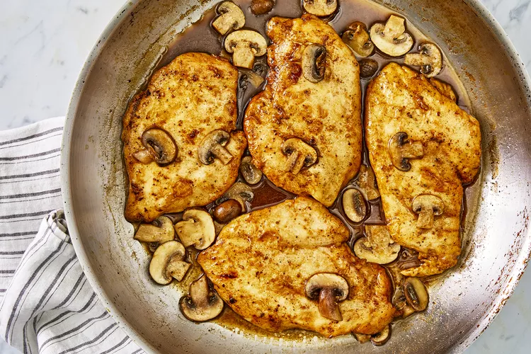

Chicken Marsala

Chicken Marsala is an Italian-style recipe for tender pan-fried chicken breasts in a sweet Marsala wine and mushroom sauce. It's super quick and easy to make for a weeknight dinner AND sophisticated enough for company.
Chicken Marsala is a classic dish loaded with rich, meaty, and herbaceous flavor. A luscious mushroom wine sauce coats fried chicken breast for an unrivaled taste of Italian-inspired goodness. This mouthwatering recipe transforms common pantry ingredients into a show-stopping meal. Learn how to make the best Chicken Marsala right here.
- Ingredients:
-
- 1/4 cup all-purpose flour for coating
- 1/2 teaspoon salt
- 1/4 teaspoon ground black pepper
- 1/2 teaspoon dried oregano
- 4 medium skinless, boneless chicken breast halves - pounded 1/4 inch thick
- 4 tablespoons butter
- 4 tablespoons olive oil
- 1 cup sliced mushrooms
- 1/2 cup Marsala wine
- 1/4 cup cooking sherry
- Directions:
-
- In a shallow dish or bowl, mix together the flour, salt, pepper and oregano. Coat chicken pieces in flour mixture.
- In a large skillet, melt butter in oil over medium heat. Place chicken in the pan, and lightly brown. Turn over chicken pieces, and add mushrooms. Pour in wine and sherry. Cover skillet; simmer chicken 10 minutes, turning once, until no longer pink and juices run clear.